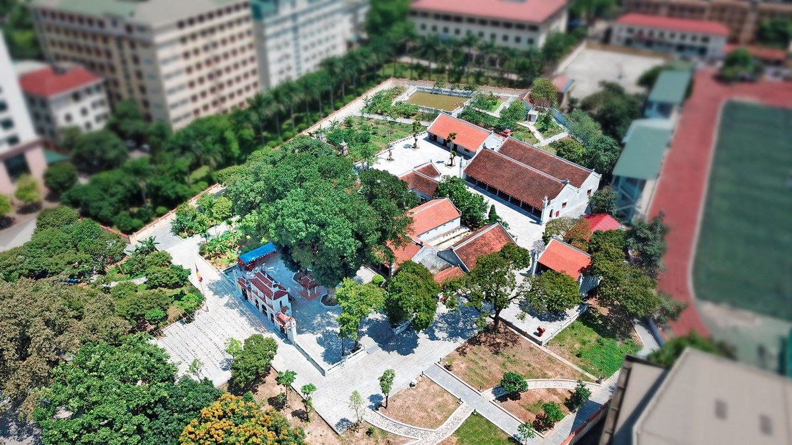
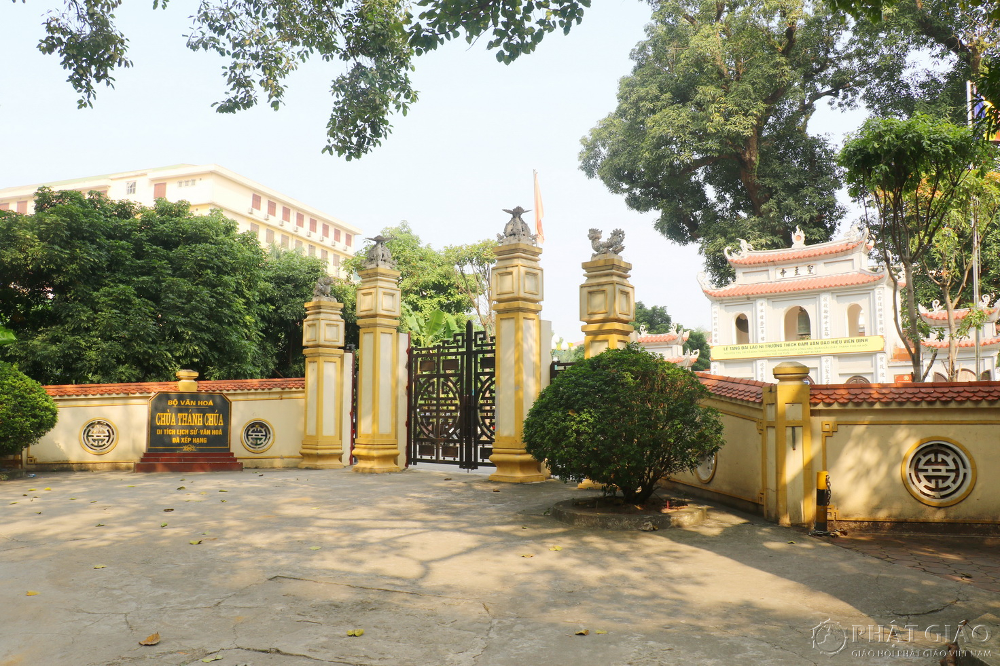
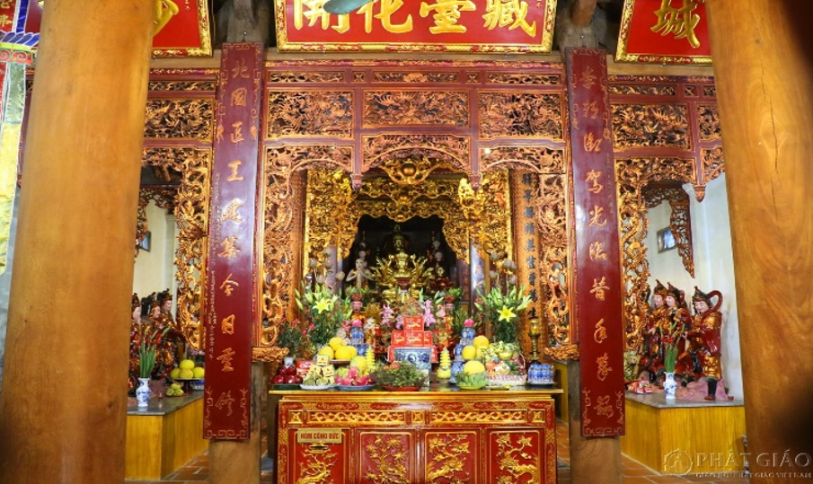

Introduction to Thanh Chua Pagoda

Thanh Chua Pagoda - A historical site with deep cultural significance
Thanh Chua Pagoda, located within the campus of Hanoi National University, is not only a religious site but also a symbol of Vietnam's rich cultural and historical heritage. The pagoda has stood for centuries as a witness to the changing times and remains a deeply respected spiritual landmark. Originally constructed during the Ly dynasty, it has been a place of worship, reflection, and gathering for local residents and visitors alike.
The architecture of the pagoda reflects the classical styles of Vietnamese religious structures, blending Buddhist symbols with intricate carvings and statues. Surrounding the main temple area, there are lush gardens and stone paths leading to various statues and altars that pay homage to historical and mythical figures.
Location: Thanh Chua Pagoda, Hanoi National University of Education (HNUE) | Date of Visit: October 2024
Historical Significance

The rich history of Thanh Chua Pagoda through the centuries
The pagoda was originally established during the reign of Emperor Ly Thanh Tong (1054–1072) and has undergone various renovations throughout the centuries. During these years, it served as a religious sanctuary and a symbol of Buddhist influence in Vietnam. The site holds many relics from past dynasties and has been a significant place of pilgrimage for people seeking spiritual guidance and blessings.
The intricate wooden carvings and statues within the temple represent a variety of figures from Buddhist folklore. One notable feature of Thanh Chua Pagoda is its ancient bell tower, which is said to have survived through numerous wars and natural calamities.
Architectural Beauty and Preservation

A masterpiece of traditional Vietnamese architecture
The architectural style of Thanh Chua Pagoda is a reflection of Vietnam’s traditional design, with a combination of wood and stone. The structure is built with high pillars and intricately designed roofs, each representing important aspects of Buddhist symbolism. The pagoda’s main hall houses a large Buddha statue, surrounded by smaller representations of Bodhisattvas.
Preservation efforts have been undertaken to maintain the integrity of the temple, especially after significant historical events like wars. The combination of ancient artistry and modern preservation techniques makes Thanh Chua Pagoda not only a place of worship but also a cultural treasure.